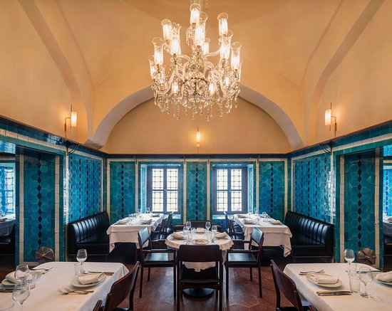

GERÇEK İSTANBULLUNUN
DÖNÜŞÜ: PANDELİ
Duyarlı, alçak gönüllü, cömert, jilet, kapısı herkese açık… Her şeyin başladığı yer… İstanbul’un tadı, tarihi, kültürü, adabı ve temsilcisi niteliğindeki asırlık restoran, günümüzün ‘son İstanbul Beyi’ Pandeli orijinal ruhu bozulmadan yenilendi. Tarihi öykü kaldığı yerden devam ediyor…
